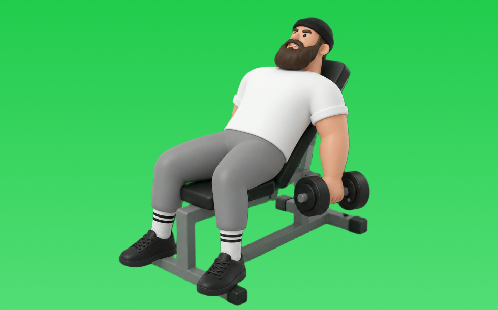

インクラインダンベルカール

インクラインダンベルカールとは、角度をつけたインクラインベンチに座り、ダンベルを使って「肘を曲げる」動作で腕（上腕二頭筋）、前腕を鍛える種目です。上腕を体より後ろに保ちやすくストレッチを得やすいのが特徴で、肘を固定して持ち上げ、ゆっくり下ろす動作を繰り返します。腕の太さづくりや引く力の補強が期待できます。
- 対象部位
- 腕
- 器具
- ダンベル
- 記録形式
- 重量・回数
- 別名
- インクラインカール
YouTube動画
-
【筋トレ解説】誰でも腕が太くなるインクラインダンベルカールのやり方を徹底解説します
-
【上腕二頭筋】カッコいい腕を作るならコレだ！インクラインアームカールのやり方解説！
-
【木澤&横川】字幕付き徹底解説！インクラインカール
-
【腕トレ】最強に二頭に効く！インクラインダンベルカールの極意
-
"8kgで十分"二頭筋はストレッチさせてデカくせよ【インクラインカール】
-
【永久保存版】二頭筋トレ王道種目のインクラインダンベルカールについてジュラシック木澤が完全解説！！
-
【極太の上腕二頭筋を作る!!】インクラインダンベルカールの適切なフォームと注意点を徹底解説!!
-
【よくある5つの間違い】インクラインカール篇
-
【力こぶを作る筋トレ】インクラインダンベルカールのやり方・コツ・注意点！上腕二頭筋のストレッチ種目です◎
-
腕を太くしたい人に１番オススメの最強種目をガチ解説。
-
腕を太くしたい人に一番おすすめの最強種目をガチ解説
-
【筋トレ】筋トレ歴35年の山本義徳がお勧めするダンベルカールのやり方がこれです！
-
【究極】100%腕が太くなるインクラインダンベルカールのコツ
-
インクラインダンベルカールでやりがちな5つのミス
-
【腕トレ解説】腕が確実に太くなるダンベルカールの正しいやり方
YouTubeショート
-
持田選手（おかずもち）に上腕二頭筋を大きくするためのインクラインアームカールについてレクチャーしていてもらいました！#筋トレ #volix #上腕二頭筋 #ちょこっと惜しい #腕トレ
-
みなさんはインクラインアームカールやってますか？持田選手とコロチキの西野さんが上腕二頭筋に効くトレーニングをレクチャーしてくれました！#筋トレ #volix #上腕二頭筋 #ちょこっとおしい #腕トレ
-
【インクラインダンベルカール】めっちゃ効く腕の位置のコツ※エゴイスト
-
腕を太くするダンベルカール #筋トレ #トレーニング #筋肉 #ホームトレーニー #ホームトレーニング #ボディビル #フィジーク
-
インクラインダンベルアームカールで、極太の腕を手に入れよう💪 #インクラインベンチプレス #筋トレ #フィジーク
-
【腕トレ】上腕二頭筋を鍛えるインクラインダンベルカールのやり方解説
-
みなさんはインクラインアームカールやってますか？持田選手とこんがりさんが上腕二頭筋に効くトレーニングをレクチャーしてくれました！#筋トレ #volix #腕トレ #ちょこっと惜しい #上腕二頭筋
-
みなさんはダンベルカールやってますか？こんがりとハムちゃんがしっかり上腕二頭筋に効くトレーニングをレクチャーしてくれました#volix #腕トレ #ちょこっとおしい #上腕二頭筋 #volixgear
-
二頭トレおすすめ種目【第1位】インクラインダンベルカール #shorts
-
【筋トレ初心者必見 | ダンベルカールのやり方】日本人初ミスター・オリンピアに出場した、山岸プロが解説！ #山岸秀匡 #筋トレ初心者 #インクラインダンベルカール 横型バージョンはコメ欄から!
-
正しいインクラインダンベルカールのやり方 #筋トレ #ダイエット #ボディメイク
-
インクラインカールの質を劇的に上げる3つのコツ
-
インクラインカール効かない人が見るべき動画
-
上腕二頭筋のおすすめ種目3つを紹介【筋トレ】
-
【宅トレ】ダンベルカールよくあるミス #腕トレ #ダンベルカール
-
持田選手（おかずもち）に上腕二頭筋を大きくするためのインクラインハンマーカールについてレクチャーしていてもらいました！#筋トレ #volix #上腕二頭筋 #ちょこっと惜しい #腕トレ
-
【腕トレ解説】インクライン・ハンマーカール #筋トレ解説 #腕トレ #腕トレーニング
-
【ダンベル】腕トレ４選 #筋肉
-
持田選手にアームカールのスーパーセットについてレクチャーしていてもらいました！次はどの種目の解説をやってほしいかコメントしてね！#筋トレ #volix #トレーニング #fitness #持田教利
-
最も効果のある上腕二頭筋の種目3選 #フィットネス #筋トレ
-
腕を太くする為にやるべき種目を伝授。#shorts
-
世界最大のダンベルがヤバすぎる【世界の筋肉】
-
早く知りたかった腕トレ③ハンマーカール #shorts #筋トレ
-
正しいダンベルベンチプレス5つのポイント 【筋トレ】
-
【一撃で効かす】インクラインカール｜3つのポイント
-
絶対腕が太くなる！インクラインダンベルカールのポイント！#shorts #筋トレ #ダイエット
-
インクラインプレスで大胸筋上部を鍛える2つのポイント #フィットネス #筋トレ
-
二頭筋を上手に作るアームカールの3つの簡単な方法 #上腕二頭筋 #筋トレ #自宅トレーニング
-
みなさんはワンハンドダンベルカールやってますか？持田選手とこんがりさんが上腕二頭筋に効くトレーニングをレクチャーしてくれました！#筋トレ #volix #腕トレ #ちょこっと惜しい #上腕二頭筋
-
ダンベルカールと、バーベルカールのコンパウンドセットでやった上腕二頭筋トレーニング #筋トレ #筋肉 #トレーニング #腕トレーニング
-
マッチョってダンベル何キロまで持てる？#shorts #筋トレ #ダンベル何キロ持てる
-
先生!上腕二頭筋をデカくするおすすめ種目は？ ＃Shorts ＃助けて山本先生!
動作方法
- 肘の位置を固定して構える
- 肘を軸にして持ち上げる
- ゆっくり下ろして負荷を保つ
動作ポイント
- 肘を前後に振りすぎない
- 手首を反らしすぎない
ワンポイントアドバイス
- 肘の位置を固定すると狙った部位に効きやすい
- 回数を急がず、下ろし動作を丁寧に行う
目的別回数設定
目的や体力に応じた一般的な目安です。無理のない範囲で調整してください。
- 筋力アップ
- 1〜5回
- 筋肥大
- 6〜12回
- 持久力アップ
- 13〜20回
YouTube動画について
動画はYouTubeの公開情報をもとに表示しています。内容は投稿者によるもので、Biggrによる監修ではありません。
アプリを入手
筋トレやトレーニングの記録はBiggrにお任せください。今すぐ無料で使い始められます。